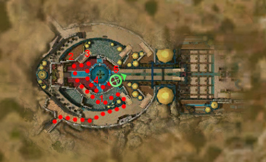

◉ Mission Map

Click to enlarge · Local cache · Wiki
Summary (click to expand)
The priestess Kehanni has given you an invitation to the Garden of Seborhin for the Festival of Lyss which the three Vabbi princes are known to be attending. In this mission you must perform tasks around the festival to convince each of the princes you are worth talking to and try to convince them that they should side with Istan and the Sunspears against Varesh and Kourna .
Region: Vabbi · Mission: 9 of 20 · Type: Cooperative
✓ Objectives
Convince the three Princes of Vabbi to join the fight against Varesh.
- Recruit Prince Mehtu the Wise for your war against Varesh.
- Persuade Prince Bokka the Magnificent to join the Sunspears in the struggle against Warmarshal Varesh.
- Coerce Prince Ahmtur the Mighty to rally against Warmarshal Varesh.
- Prince Ahmtur the Mighty wishes to speak with you again. Find out what he has to say.
- Defend the garden and its guests by slaying the harpies.
- *Bonus* Participate in the Festival of Lyss.
- You have participated in [0...5] of 5 festivities.
→ Walkthrough
The aim of this mission is to try to convince the three Vabbian princes that they should join the fight against Varesh. However, to gain an audience with them, you must participate in some of the festival's mini-games. Although this can be done without any fighting, gaining the master's reward requires that you defeat at least one foe. Towards the end of the mission, you must also help the guards defeat several mobs of harpies. This means you need to bring a build that includes some damage and some self-healing.
Gaining an audience
The quickest way to get permission to speak to the princes is:
- Prince Mehtu the Wise: (One of the following)
- Teach his niece or nephew to dance by using the /dance emote after speaking to Dende (female characters) or Mina (male characters). This counts as one of the festivities for the bonus.
- Win the Mime Duel against Lumo the Mime. This counts as one of the festivities for the bonus.
- Prince Bokka the Magnificent: (One of the following)
- Present Royal Finance Minister Oluda with a gift of the Rare Antique Elonian Vase, obtained from Jejumba via one of the following methods. This counts as one of the festivities for the bonus.
- Pay her 4 platinum.
- Obtain the Golden Phoenix Feather from the Royal Guard Captain, located in the eastern corridor, by defeating him.
- Defeat Jejumba.
- Bribe Royal Finance Minister Oluda (cost: 5
 ) If done after presenting the gift, this counts as another one of the festivities for the bonus as well.
) If done after presenting the gift, this counts as another one of the festivities for the bonus as well.
- Present Royal Finance Minister Oluda with a gift of the Rare Antique Elonian Vase, obtained from Jejumba via one of the following methods. This counts as one of the festivities for the bonus.
- Prince Ahmtur the Mighty: (One of the following)
- Defeat "Palawa Joko" in the re-enactment of the Battle of Jahai (requires fighting). This counts as one of the festivities for the bonus.
- Beat Zilo the Drunkard in a drinking contest (does not require combat). This counts as another one of the festivities for the bonus as well.
Speak to each prince in turn, after which Ahmtur will request that you speak with him again, triggering a cinematic of a harpy invasion of the event. You will need to complete the bonus before doing this.
★ Bonus
- See also: Tihark Orchard/Guide for a detailed walkthrough
To obtain the Master's Reward, you have to participate in five festival events, which in practical terms means just two more mini-games than the minimum you need to complete the primary mission. The two optional activities listed above will meet the requirements for the bonus; it is usually a choice between dueling the mime (not required for the primary mission) or spending 5 on the bribe.
on the bribe.
◆ Hard Mode
The mini-games work the same in hard or normal mode; only the harpy fight is different. However, in either case, you have enough support from the various guards and NPCs in the area that you just need to stay alive while leading your allies to the harpies (or pulling the foes towards your allies).
☠ Bosses & Elites
See wiki for boss list (or none listed).
✦ Tips & Notes
Skill recommendations
- See also: Tihark Orchard/Guide for a detailed walkthrough
- This is a solo mission, so you need to bring some Self-healing skills.
- Although the mission can be completed without damage-dealing skills, it goes more quickly if you bring a few.
- A spirit spammer can easily win all the fights, including the mini-games (you can typically create the spirits and proceed to the next game while these spirits kill any foes).
- Speed boosts help you move quickly between the mini-games, which are spread far apart. You can also use shadow steps to jump between floors.
Notes
| The Guild Wars 2 Wiki has an article on Tihark Orchard. |
- Complete exploration of this area contributes approximately 3.2% to the Elonian Cartographer title.
- If you let the guards by the north stairwell fall to the Harpies and leave the Harpies on the south balcony (near Dende and Mina), you can take the north stairwell to explore the entire orchard area for the Elonian Cartographer title. You can come back to the south Harpies to finish the mission after you have finished exploring. Exploring the whole map this way takes about 25 minutes with speed boosts.
- Alternatively, bring Death's Retreat, Return, Heart of Shadow or Ebon Escape and shadow step past the guards (e.g. by using the skill on a dropped item).
- Looting a Food or Drink tray before the final Harpies are killed by the guards will cause your character to be holding it in the final cinematic. This has no impact on the story.
- If you leave the Harpies be and take the north-eastern way to the back of the garden, you will see the princes, Norgu, Goren, Talhkora and Vabbi Guards standing ready for the final cinematic.
- Tahlkora appears in the mission as a level 12 Monk, wearing her own armor and weapons (wand and focus item).
- Death during this mission will cause a note to come up saying "MISSION FAILED: You died during the party. Drink responsibly next time!"
- You can participate in six festival activities: the dance, the mime duel, the re-enactment, the drinking duel, obtaining the vase, and bribing the finance minister. To obtain Master's Reward, you only need to participate in five.
- After completing this mission, your character will be taken to The Kodash Bazaar.
- Completion of this mission will fill in page #7 in the Night Falls storybook.